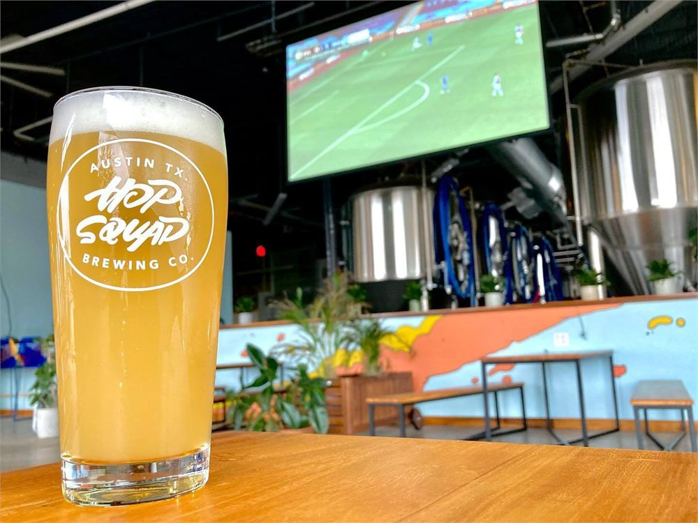

Hopsquad Brewing Co
A North Austin brewery close to the Q2 Stadium area.
2307 Kramer Lane, Austin, Texas 78758
The destination edit
Hopsquad Brewing Co
2307 Kramer Lane, Austin, Texas 78758
Major League Soccer fans flock to this North Burnet for the rowdy pregame atmosphere, which sits conveniently down the road from Q2 Stadium. (With nearby breweries 4th Tap and Circle shuttering, this is now the closest pregame option.) The core beer lineup is available to-go in cans, and among the favorites are the Zapatista Mexican lager and (especially) the Architetto Ruffini Italian pils. Pizza is available from the adjacent Dough Squad trailer. And this is worth mentioning: the brewery often opens early on Sundays for Formula 1 fans, and it’s the Austin viewing headquarters for fans of the Premier League team Newcastle FC. Non-beer options like margaritas and mules are also available, and a 3 to 6 p.m. weekday happy hour offers select pints for $5 and 25 percent off to-go six-packs. Takeout orders can be placed online; there are indoor and outdoor dine-in areas.